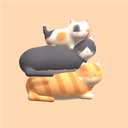
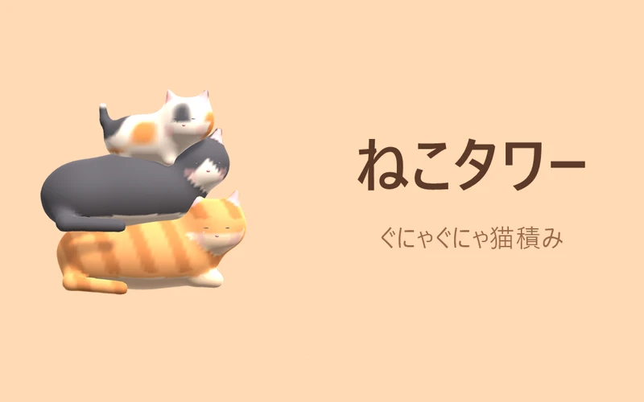
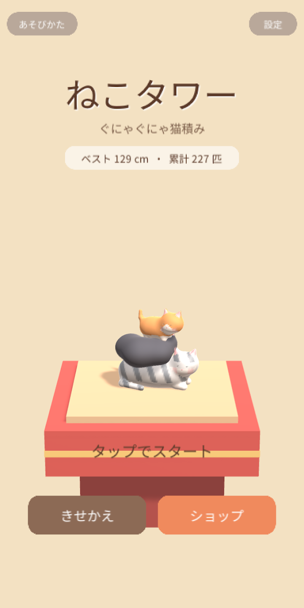
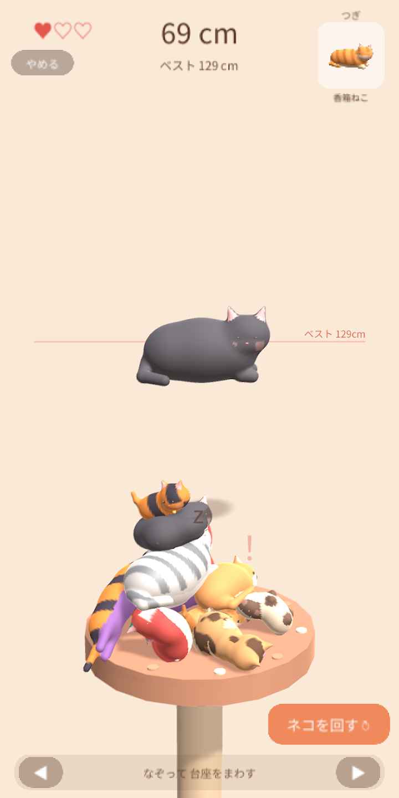
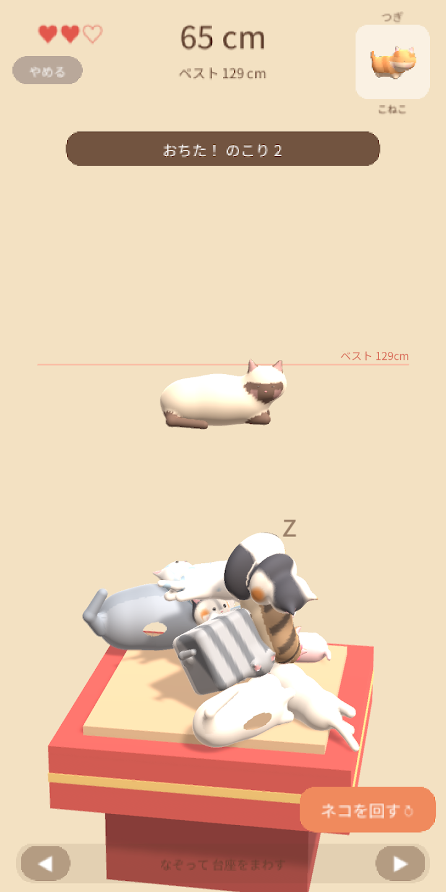
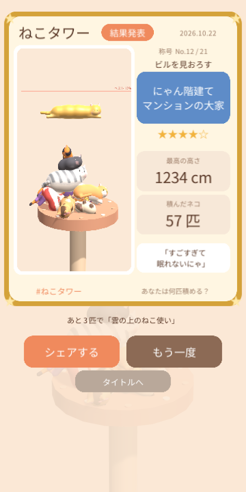
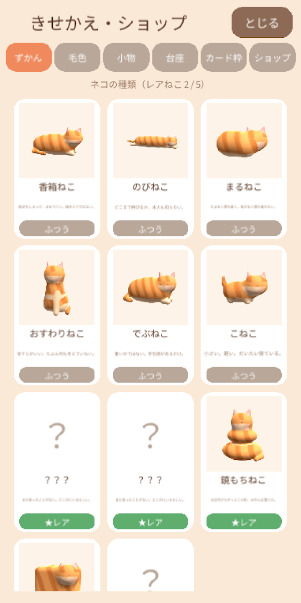

ねこタワー - ぐにゃぐにゃ猫積み
3D猫積みパズル3D cat-stacking puzzle3D 疊貓益智3D 叠猫解谜3D 고양이 쌓기 퍼즐やわらかい猫を1匹ずつ積み上げる3Dゲーム。置いて3秒で猫が勝手に動き出すので、積んだ塔も油断できません。2026年10月27日に配信開始（Android のみ）。Stack soft, wobbly cats one by one. Three seconds after landing they start to stretch and wriggle, so no tower is ever safe. Out now on Android (since Oct 27, 2026).把柔軟的貓咪一隻一隻往上疊的 3D 遊戲。放下 3 秒後貓咪就會自己動起來，疊好的塔也不能大意。2026 年 10 月 27 日上架（僅限 Android）。把柔软的猫咪一只一只往上叠的 3D 游戏。放下 3 秒后猫咪就会自己动起来，叠好的塔也不能大意。2026 年 10 月 27 日上架（仅限 Android）。말랑말랑한 고양이를 한 마리씩 쌓아 올리는 3D 게임. 내려놓고 3초가 지나면 고양이가 제멋대로 움직이기 시작하므로, 쌓아 올린 탑도 방심할 수 없습니다. 2026년 10월 27일 서비스 시작(Android만 제공).

スクリーンショットScreenshots螢幕截圖截图스크린샷





ねこタワー - ぐにゃぐにゃ猫積み はどんなゲーム?What is ねこタワー - ぐにゃぐにゃ猫積み?ねこタワー - ぐにゃぐにゃ猫積み 是什麼樣的遊戲？ねこタワー - ぐにゃぐにゃ猫積み 是什么样的游戏？ねこタワー - ぐにゃぐにゃ猫積み는 어떤 게임인가요?
ぐにゃぐにゃの猫を、落として、積んで、タワーにするゲームです。
猫は置いてから3秒たつと目を覚まし、伸びをしたり、もぞもぞ動いたり、ときどき歩いたりします。せっかく積んだ塔がゆっくり崩れていくのを、ハラハラしながら見守ってください。3匹落ちたらおしまい。高さと匹数で21段階の称号がもらえます。
あそびかた
- 指で左右になぞって、落とす場所を決めます
- 指をはなすと、猫が落ちます
- 画面の下をなぞると台座が回り、奥や手前にも積めます
猫のこと
- 香箱、のび、まるまり、おすわり、でぶ、こねこの6種類。ときどき、変な形のレアな猫も現れます
- 茶トラ、白、黒、サバトラ、ハチワレ、シャム、三毛など、毛色はきせかえで選べます
- 猫たちは本物の鳴き声で鳴きます。積むほどにぎやかになります
結果カード
ゲームが終わると、塔の写真と称号、高さ、匹数が入ったカードができます。そのままSNSに共有できます。
課金について
広告を消す、毛色や小物、台座、カードの枠などの買い切りの品物があります。どれも見た目が変わるだけで、ゲームの有利不利は変わりません。
A game where you drop squishy, wobbly cats and stack them into a tower.
Three seconds after landing, each cat wakes up. It stretches, wriggles, and sometimes wanders off. Watch nervously as your carefully built tower slowly sways. Three falls and it's over. Earn one of 21 titles based on how many cats you stacked and how high.
HOW TO PLAY
- Swipe left and right to choose where to drop
- Lift your finger to drop the cat
- Swipe the bottom bar to turn the stand and stack in front or behind
THE CATS
- Six types: loaf, stretchy, curled, sitting, chonky and kitten. Strange rare cats show up now and then
- Choose coats like orange tabby, white, black, tuxedo, Siamese and calico
- The cats meow with real recorded voices. The more you stack, the livelier it gets
RESULTS CARD
When the game ends you get a card with a photo of your tower, your title, height and cat count, ready to share on social media.
PURCHASES
One-time purchases: remove ads, extra coats, accessories, stands and card frames. They only change the look and never affect gameplay.
這是一款把軟趴趴的貓咪放下、疊起來、堆成一座塔的遊戲。
貓咪放下 3 秒後就會醒來，伸懶腰、窸窸窣窣地動，偶爾還會走動。請提心吊膽地看著辛苦疊好的塔慢慢崩塌。掉下 3 隻就結束。依高度與隻數可獲得 21 階段的稱號。
玩法
- 用手指左右滑動，決定掉落位置
- 放開手指，貓咪就會掉下去
- 滑動畫面下方，底座會旋轉，也能疊到後方或前方
關於貓咪
- 有香箱坐、伸展、蜷縮、坐姿、胖胖、小貓共 6 種。偶爾還會出現形狀奇特的稀有貓咪
- 橘虎斑、白、黑、銀虎斑、八字、暹羅、三花等毛色，可以自由換裝選擇
- 貓咪會發出真實的叫聲。疊得越多就越熱鬧
結果卡片
遊戲結束後，會產生一張附有塔的照片、稱號、高度與隻數的卡片。可以直接分享到社群網站。
關於付費
備有移除廣告，以及毛色、小物、底座、卡片外框等買斷制商品。全都只改變外觀，不會影響遊戲的強弱。
这是一款把软趴趴的猫咪放下、叠起来、堆成一座塔的游戏。
猫咪放下 3 秒后就会醒来，伸懒腰、窸窸窣窣地动，偶尔还会走动。请提心吊胆地看着辛苦叠好的塔慢慢崩塌。掉下 3 只就结束。依高度与只数可获得 21 阶段的称号。
玩法
- 用手指左右滑动，决定掉落位置
- 放开手指，猫咪就会掉下去
- 滑动画面下方，底座会旋转，也能叠到后方或前方
关于猫咪
- 有香箱坐、伸展、蜷缩、坐姿、胖胖、小猫共 6 种。偶尔还会出现形状奇特的稀有猫咪
- 橘虎斑、白、黑、银虎斑、八字、暹罗、三花等毛色，可以自由换装选择
- 猫咪会发出真实的叫声。叠得越多就越热闹
结果卡片
游戏结束后，会产生一张附有塔的照片、称号、高度与只数的卡片。可以直接分享到社交平台。
关于付费
备有移除广告，以及毛色、小物、底座、卡片边框等买断制商品。全都只改变外观，不会影响游戏的强弱。
흐물흐물한 고양이를 떨어뜨리고 쌓아서 타워로 만드는 게임입니다.
고양이는 내려놓고 3초가 지나면 눈을 뜨고 기지개를 켜거나, 꼼지락거리거나, 가끔 걸어 다니기도 합니다. 애써 쌓은 탑이 천천히 무너져 가는 모습을 조마조마하게 지켜보세요. 3마리가 떨어지면 끝. 높이와 마릿수에 따라 21단계의 칭호를 받을 수 있습니다.
플레이 방법
- 손가락으로 좌우로 쓸어 떨어뜨릴 위치를 정합니다
- 손가락을 떼면 고양이가 떨어집니다
- 화면 아래쪽을 쓸면 받침대가 돌아가, 안쪽이나 바깥쪽에도 쌓을 수 있습니다
고양이에 대해
- 식빵 자세, 기지개, 동그랗게 말기, 앉기, 뚱냥이, 아기 고양이의 6종류. 가끔 이상한 모양의 희귀한 고양이도 나타납니다
- 치즈, 흰색, 검정, 고등어, 턱시도, 샴, 삼색 등 털 색은 꾸미기로 고를 수 있습니다
- 고양이들은 진짜 울음소리로 웁니다. 쌓을수록 시끌벅적해집니다
결과 카드
게임이 끝나면 탑 사진과 칭호, 높이, 마릿수가 담긴 카드가 만들어집니다. 그대로 SNS에 공유할 수 있습니다.
결제에 대해
광고 제거, 털 색이나 소품, 받침대, 카드 테두리 등 1회 구매 상품이 있습니다. 모두 외형만 바뀔 뿐, 게임의 유불리는 달라지지 않습니다.
よくある質問FAQ常見問題常见问题자주 묻는 질문
無料で遊べますか?Is it free?可以免費玩嗎？可以免费玩吗？무료로 즐길 수 있나요?
無料で遊べます。広告を消すアイテムや、毛色・小物・台座・カードの枠などの買い切りの品物がありますが、どれも見た目が変わるだけで、ゲームの有利不利は変わりません。Yes. There are one-time purchases (ad removal, coat colors, accessories, stands, card frames), but they only change the look and never affect the game.可免費遊玩。有移除廣告的道具，以及毛色、小物、底座、卡片外框等買斷制商品，但全都只改變外觀，不會影響遊戲強弱。可免费游玩。有移除广告的道具，以及毛色、小物、底座、卡片边框等买断制商品，但全都只改变外观，不会影响游戏强弱。무료로 즐길 수 있습니다. 광고를 제거하는 아이템과 털 색·소품·받침대·카드 테두리 등 1회 구매 상품이 있지만, 모두 외형만 바뀔 뿐 게임의 유불리는 달라지지 않습니다.
どんな操作ですか?How do the controls work?要怎麼操作？要怎么操作？어떻게 조작하나요?
指で左右になぞって落とす場所を決め、指をはなすと猫が落ちます。画面の下をなぞると台座が回り、奥や手前にも積めます。Slide left or right to aim, and let go to drop the cat. Swipe along the bottom of the screen to turn the stand and stack from any side.用手指左右滑動決定掉落位置，放開手指，貓咪就會掉下去。滑動畫面下方，底座會旋轉，也能疊到後方或前方。用手指左右滑动决定掉落位置，放开手指，猫咪就会掉下去。滑动画面下方，底座会旋转，也能叠到后方或前方。손가락으로 좌우로 쓸어 떨어뜨릴 위치를 정하고, 손가락을 떼면 고양이가 떨어집니다. 화면 아래쪽을 쓸면 받침대가 돌아가 안쪽이나 바깥쪽에도 쌓을 수 있습니다.
いつゲームオーバーになりますか?When does a game end?什麼時候會遊戲結束？什么时候会游戏结束？언제 게임 오버가 되나요?
猫が3匹落ちたらおしまいです。高さと匹数で21段階の称号がもらえ、塔の写真入りの結果カードを SNS に共有できます。When three cats fall. You get one of 21 titles for your height and cat count, plus a results card with a photo of your tower to share.掉下 3 隻貓咪就結束了。依高度與隻數可獲得 21 階段的稱號，還能把附有塔照片的結果卡片分享到社群網站。掉下 3 只猫咪就结束了。依高度与只数可获得 21 阶段的称号，还能把附有塔照片的结果卡片分享到社交平台。고양이가 3마리 떨어지면 끝입니다. 높이와 마릿수에 따라 21단계의 칭호를 받을 수 있으며, 탑 사진이 담긴 결과 카드를 SNS에 공유할 수 있습니다.
iPhone（iOS）でも遊べますか?Is it on iPhone (iOS)?iPhone（iOS）也能玩嗎？iPhone（iOS）也能玩吗？iPhone(iOS)에서도 즐길 수 있나요?
現在は Android 版（Google Play）のみです。App Store（iOS）では配信していません。Not at the moment — it is only on Android (Google Play), not on the App Store.目前僅提供 Android 版（Google Play），App Store（iOS）上沒有上架。目前仅提供 Android 版（Google Play），App Store（iOS）上没有上架。현재는 Android 버전(Google Play)만 제공합니다. App Store(iOS)에서는 서비스하지 않습니다.